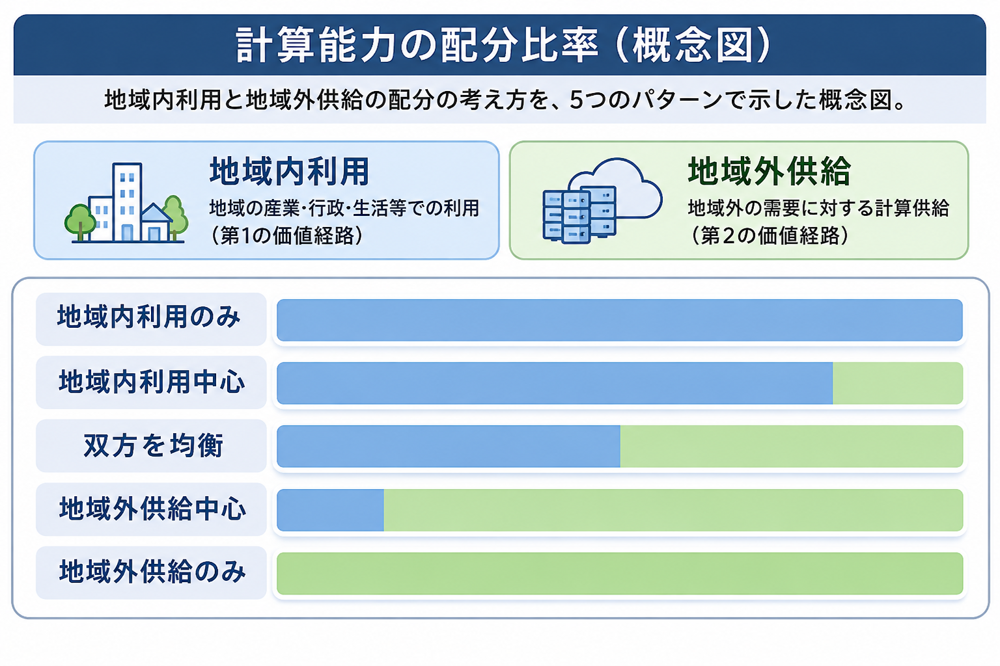
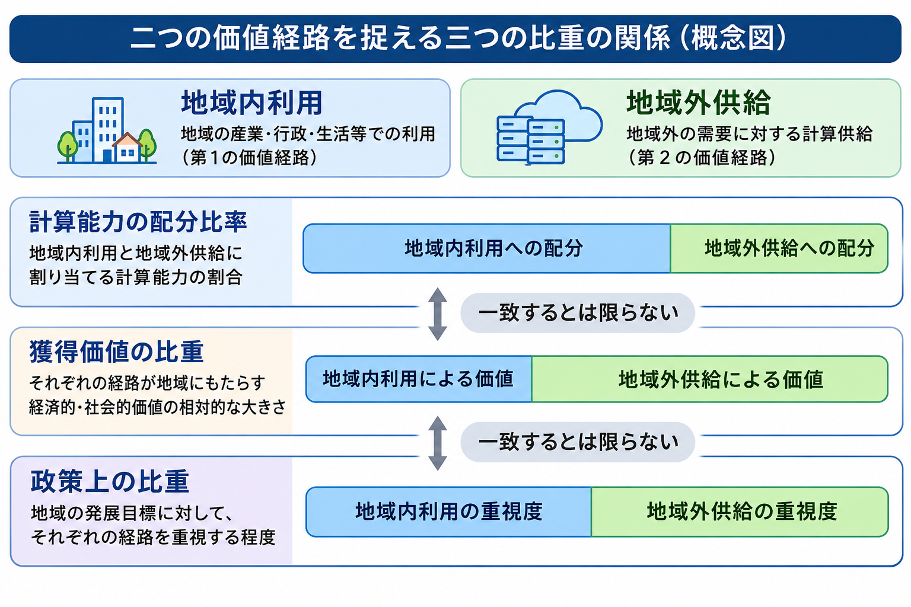
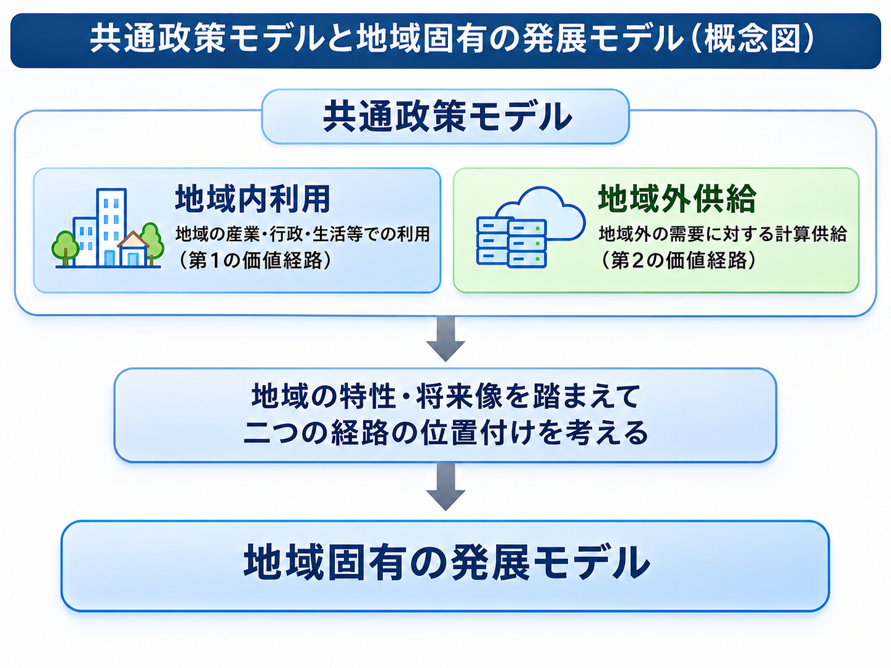

データセンターを地域資産に変える政策設計
第3章 地域特性に応じた政策モデルの設計
3.1 地域の将来構想
地域が発展するとは、どのような状態を指すのでしょうか。企業が増え、新たな雇用が生まれ、人口が増加することは、地域の発展の一つの姿です。しかし、すべての地域が同じ方向へ発展する必要があるのでしょうか。
地域によって、産業構造や人口構造、経済基盤、生活環境は異なります。大学や研究機関が集積する地域では、研究開発機能を充実させ、新たな技術や産業を生み出すことが、地域の発展につながるでしょう。長年にわたって地域を支えてきた産業がある地域では、その産業を維持し、技術力や生産性を高めていくことが重要になる場合もあります。
また、人口減少や高齢化が進む地域では、医療や介護、交通などの生活に欠かせないサービスを維持し、住民が安心して暮らし続けられる環境を整えることが、地域の将来を考えるうえで重要な課題となります。
地域の発展を多面的に捉える取り組みは、国の政策にも見られます。デジタル庁は、住民の暮らしやすさや幸福感を把握するための地域幸福度（Well-Being）指標の活用を進めています。自治体や住民、地域の事業者などが、まちづくりの目標を共有するための指標として位置付けられています（デジタル庁「地域幸福度（Well-Being）」、2026年9月28日更新）。
地域幸福度指標では、住民へのアンケート調査に基づく主観的なデータと、生活環境などに関する客観的なデータを用いて、地域の特徴を多面的に把握することができます（デジタル庁「地域幸福度（Well-Being）指標の活用」、2026年11月26日確認）。
こうした視点を取り入れると、地域の発展を人口や経済規模の拡大だけで捉える必要はないことが分かります。人口が増加しなくても、住民が受けられる医療や介護、教育などのサービスが充実し、既存産業が維持・高度化され、暮らしやすい環境が整っていくのであれば、それも地域の発展と捉えることができます。
RapasAI Labがデータセンター政策の出発点として重視するのは、こうした地域の将来構想です。データセンターを誘致することで地域をどのように変えるのかではなく、地域が目指す将来像を実現するために、データセンターをどのように活用できるのかを考えます。
データセンターの誘致・整備は地域発展の目的ではなく、その地域が目指す将来像を実現するための政策手段なのです。
3.2 地域特性と二つの経路の比重
第2章で示した二つの価値経路から地域が獲得できる価値は、どの地域でも同じになるわけではありません。
地域の産業構造や研究開発基盤によって、計算能力を活用できる領域や、そこから生み出される価値は異なります。また、人口構造や経済構造、都市・生活基盤によっても、計算能力の活用や経済的利益の還元が地域にもたらす効果は異なります。
こうした地域特性を踏まえてデータセンター政策を考える際には、計算能力をどの程度地域内外へ配分するのか、それぞれの経路からどの程度の価値を獲得できるのか、地域政策としてどちらの経路をどの程度重視するのかを区別する必要があります。
RapasAI Labでは、二つの価値経路を捉えるための概念を、次の三つに整理します。
| 区分 | 意味 |
|---|---|
| 計算能力の配分比率 | 地域内利用と地域外供給に割り当てる計算能力の割合 |
| 獲得価値の比重 | それぞれの経路が地域にもたらす経済的・社会的価値の相対的な大きさ |
| 政策上の比重 | 地域の発展目標に対して、それぞれの経路を重視する程度 |
出典：RapasAI Lab作成
まず、計算能力の配分比率について考えてみましょう。データセンターが供給する計算能力は、すべてを地域内で利用することも、すべてを地域外へ供給することもできます。また、地域内利用と地域外供給を組み合わせる場合には、それぞれに配分する計算能力の割合も異なります。

出典：RapasAI Lab作成
この図では、地域内利用のみを行う場合から地域外供給のみを行う場合まで、計算能力の配分の考え方を五つのパターンで示しています。配分の可能性を概念的に示したものであり、地域ごとの具体的な配分比率を定めるものではありません。
では、地域内利用に割り当てる計算能力が多いほど、地域内利用から獲得できる価値も大きくなるのでしょうか。
例えば、地域内で利用する計算能力がデータセンター全体の供給能力に占める割合は小さくても、その計算能力が地域の主要産業の高度化や、住民に欠かせない医療・介護サービスの提供に利用されるのであれば、地域にとって大きな価値を持つ可能性があります。
地域外供給についても、供給する計算能力の割合が大きいことだけで、立地自治体が獲得できる経済的利益が大きいとは判断できません。計算能力の供給規模と、地域が獲得する財源や還元されるサービスなどの価値は、異なるものだからです。
つまり、計算能力の配分比率と、それぞれの経路から地域が獲得する価値の比重は、必ずしも一致しません。
さらに、獲得価値の比重と政策上の比重についても、区別して考える必要があります。地域が獲得する経済的価値と社会的価値は、必ずしも同じ尺度で比較できるものではありません。自治体がどちらの経路を重視するのかは、地域が目指す発展の方向性と、それぞれの経路から獲得できる価値との関係によって異なります。

出典：RapasAI Lab作成
例えば、地域の発展目標として住民生活の質の向上を重視する場合、地域内利用によって得られる社会的価値は、その計算能力の利用量が少なくても、政策上高い重要性を持つことがあります。
また、地域外供給から得られる財源によって、医療、介護、教育、交通などのサービスを充実させることができるのであれば、地域外供給も住民生活の質を向上させるための重要な経路となります。
地域政策として何を重視するかは、計算能力の利用量や供給量だけでは決まりません。地域が獲得する価値を多面的に捉え、その価値が地域の発展目標にどのようにつながるのかを考えることが重要になります。
3.3 地域固有の発展モデル
データセンターから地域が価値を獲得するための基本的な経路は、地域内利用と地域外供給という共通政策モデルによって示すことができます。
しかし、共通政策モデルが存在することは、すべての地域に同じ政策を適用できることを意味するものではありません。共通政策モデルを地域の産業や経済、人口、生活環境などの特性と結び付け、地域が目指す将来像に沿った政策へと展開することで、地域固有の発展モデルが形成されます。

出典：RapasAI Lab作成
同じ規模のデータセンターが立地する地域であっても、地域が選択する価値経路や、それぞれの経路の政策上の比重、獲得した価値の活用目的は異なります。
そのため、データセンター政策を考えるうえでは、地域そのものを理解することが欠かせません。どのような産業が地域を支え、住民はどのような生活を送り、地域はどのような課題を抱えているのか。さらに、その地域が将来にわたって維持したいものや、新たに発展させたいものは何かを捉える必要があります。
RapasAI Labが地域別の調査を行うのは、共通政策モデルを各地域に機械的に適用するためではありません。地域の特性を明らかにし、データセンターから獲得できる価値と地域の将来像を結び付け、その地域に適した発展モデルを導くためです。
3.4 政策モデルの成立条件
データセンターを地域資産として位置付けるためには、地域が獲得する価値を継続的に活用できることが重要になります。そのためには、地域が獲得する経済的価値の持続性が確保され、地域の生活環境や既存産業の活動環境が保全されることが必要です。
第2章で参照した米国バージニア州のJoint Legislative Audit and Review Commission（JLARC）の調査では、データセンター産業による経済効果の多くが初期建設段階で発生することが示されています（Joint Legislative Audit and Review Commission「Data Centers in Virginia」、2024年12月9日）。
施設の建設によって生じる一時的な経済効果と、施設の運営を通じて地域が継続的に獲得する価値は、性質の異なるものです。データセンターを地域の長期的な発展に活用するのであれば、建設期間中にどれほどの経済効果が生まれるかだけでなく、運営期間を通じてどのような価値を獲得できるのかを考える必要があります。
データセンター事業を取り巻く環境も、時間の経過とともに変化します。AIや半導体などの技術が進化することで、計算設備の性能やエネルギー効率は変化し、計算需要の拡大や利用形態の変化は、必要となる設備や電力供給にも影響します（International Energy Agency「Energy and AI」、2025年4月10日）。
こうした変化に伴う設備の更新や事業活動の変化は、地域が獲得する財源にも関係します。
地方税法では、償却資産に対する固定資産税の課税標準は、原則として賦課期日における当該資産の価格を基礎としています（地方税法（昭和25年法律第226号）、第349条の2）。そのため、設備資産の評価額の変化や設備の更新、新たな設備投資などによって、自治体が獲得する固定資産税収も変化します。
また、データセンターの受け入れに伴い、自治体がインフラの整備や維持管理などの負担を担う場合には、その負担も地域が獲得する経済的利益に影響します。
地域がデータセンターによる財源を活用して公共サービスを充実させたり、産業活動を支援したりする場合には、それらの政策を継続できる経済的な基盤が必要になります。計算能力を地域内で利用する政策についても、地域の産業活動や社会活動を支える計算サービスを継続的に利用できることが重要です。
地域が選択した価値経路から得られる価値を継続的に活用できることを、政策モデルの経済的な成立条件として位置付けます。
また、データセンターが地域にもたらす価値を考える際には、その整備・運営によって地域の生活環境や既存産業の活動環境が損なわれないことが前提となります。
データセンターの整備・運営に伴う主な環境上の論点を整理すると、次のようになります。
| 項目 | 主な論点 |
|---|---|
| 騒音・低周波音 | 冷却設備や電源設備などの稼働に伴う生活環境への影響 |
| 振動 | 設備の稼働に伴う周辺環境への影響 |
| 排熱 | 施設から放出される熱と周辺環境への影響 |
| 水資源 | 冷却方式などに応じた水需要と地域の水資源への影響 |
| 電力供給 | 大規模電力需要と地域の電力供給基盤への影響 |
出典：RapasAI Lab作成
騒音、低周波音、振動、排熱については、RapasAI Labが2026年11月7日に公開した「データセンターの騒音と排熱は、どこまで防げるのか――法規制の限界を補う自治体の環境協定」において、発生する仕組みや対策技術、法規制の現状、自治体と事業者との環境協定について説明しています。
https://note.com/rapasai_lab/n/n1759b72d768d?app_launch=false
水資源については、データセンターで必要となる水の量だけでなく、施設が立地する地域の水資源との関係を考える必要があります。
国際エネルギー機関（IEA）が2026年10月に公表した「Powering Artificial Intelligence」では、同機関が把握したAI専用データセンターの供給能力のうち、約40％が水ストレスの高い、または極めて高い地域に立地していると指摘しています。
また、水の使用量を抑える冷却設備は電力消費量が増える傾向があるなど、水利用効率とエネルギー効率との関係についても指摘しています（International Energy Agency「Powering Artificial Intelligence」、2026年10月14日）。
データセンターで必要となる水を確保できたとしても、その水利用が地域の生活用水や農業用水、既存産業の水利用に影響するのであれば、地域全体の資源利用という観点から課題が残ります。
電力供給についても同様です。データセンターは大規模な電力需要を生み出す施設であり、その立地や運営は地域の電力供給基盤と密接に関係しています。
IEAは、AIの普及に伴うデータセンターの電力需要の増加と、それに対応するエネルギー供給のあり方を分析しています（International Energy Agency「Energy and AI」、2025年4月10日）。また、データセンターへの投資の急速な拡大によって、地域の電力系統や電力設備の供給体制に負荷が生じていることも指摘しています（International Energy Agency「Powering Artificial Intelligence」、2026年10月14日）。
日本でも、データセンターの立地と電力・通信インフラの整備を連携させる取り組みが進められています。
エネルギー白書2025では、データセンターの立地において電力や通信ネットワークの整備状況などが重視されていることに加え、土地や産業用水、電力系統の余裕など、地域のインフラを有効に活用する観点から、データセンターの地域分散を進める重要性が示されています（経済産業省 資源エネルギー庁「エネルギー白書2025」、2025年）。
また、経済産業省と総務省が2025年6月に公表した「ワット・ビット連携官民懇談会取りまとめ1.0」では、データセンターの迅速な整備に向けて、電力事業者、通信事業者、データセンター事業者が連携し、電力と通信のインフラを効率的に整備することの重要性が示されています（経済産業省・総務省「『ワット・ビット連携官民懇談会取りまとめ1.0』を公表します」、2025年6月12日）。
水資源や電力供給は、データセンター事業者が施設を運営するために必要な資源やインフラであると同時に、地域の住民生活や既存産業の活動を支える基盤でもあります。そのため、データセンターの運営に必要な資源を確保することと、地域の資源利用やインフラの持続性を確保することを、両立させる必要があります。
RapasAI Labでは、環境保全と経済的利益の地域還元を、独立した政策課題として位置付けます。
データセンターから得られる税収や経済的利益は、地域の発展に活用するための価値であり、住民が環境負荷を受容するための対価ではありません。地域が経済的利益を獲得できることを理由として、住民の生活環境や既存産業の活動環境が損なわれることを正当化すべきではありません。
地域の生活環境や産業活動の環境が保全されることは、データセンターを地域資産として活用するための、独立した成立条件なのです。
参考文献
デジタル庁「地域幸福度（Well-Being）」2026年9月28日更新
https://www.digital.go.jp/policies/digital_garden_city_nation/well-being
デジタル庁「地域幸福度（Well-Being）指標の活用」2026年11月26日確認
https://well-being.digital.go.jp/
International Energy Agency（IEA）「Energy and AI」2025年4月10日
https://www.iea.org/reports/energy-and-ai
International Energy Agency（IEA）「Powering Artificial Intelligence: Strategies for integrating data centres into electricity systems」2026年10月14日
参照箇所：Executive summary
https://www.iea.org/reports/powering-artificial-intelligence/executive-summary
経済産業省 資源エネルギー庁「令和6年度エネルギーに関する年次報告（エネルギー白書2025）第1部 第2章 第2節 DX・GXを踏まえたエネルギー・産業政策」2025年
https://www.enecho.meti.go.jp/about/whitepaper/2025/html/1-2-2.html
経済産業省・総務省「『ワット・ビット連携官民懇談会取りまとめ1.0』を公表します」2025年6月12日
https://www.meti.go.jp/press/2025/06/20250612001/20250612001.html
Joint Legislative Audit and Review Commission（JLARC）「Data Centers in Virginia」2024年12月9日
https://jlarc.virginia.gov/landing-2024-data-centers-in-virginia.asp
e-Gov法令検索「地方税法（昭和25年法律第226号）」1950年7月31日公布
参照条文：第349条の2
https://laws.e-gov.go.jp/law/325AC0000000226
RapasAI Lab「データセンターの騒音と排熱は、どこまで防げるのか――法規制の限界を補う自治体の環境協定」2026年11月7日
https://note.com/rapasai_lab/n/n1759b72d768d?app_launch=false